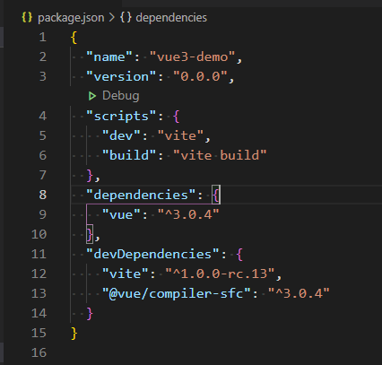
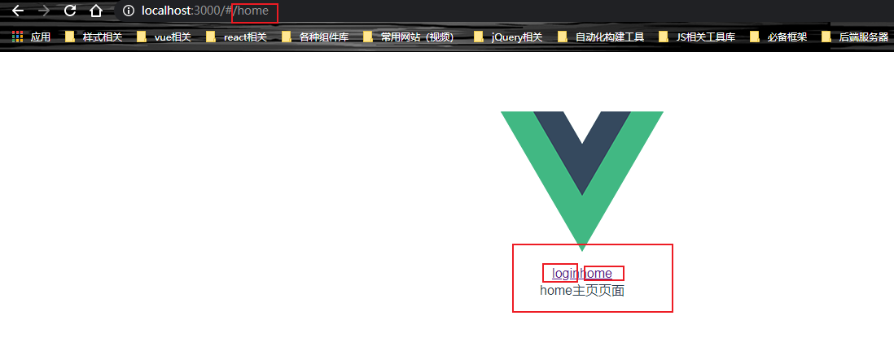

vue3.0初体验123
vue简要发展历程
1、2013年–尤雨溪也就是尤大大，从angular中提取自己所喜欢的部分，开发出了第一代vue，但是此时命名为Seed。
2、2013年12月–正式更名为vue，版本号0.6.0。
3、2014年1月–vue正式对外发布，版本号0.8.0.
4、2014年2月–，版本号为0.9.0的版本拥有自己的代号Animatrix，从此每个重要的版本都有属于自己的代号。
5、2015年6月，vue迎来了它的开门红，打响第一炮，Laravel社区，也就是当时一款流行的PHP框架社区，首次使用vue0.12.0版本开发，从西vue在js社区也打响了知名度。
6、2015年10月–1.0.0 Evangelion（新世纪福音战士）是Vue历史上的第一个里程碑。同年，vue-router（2015-08-18）、vuex（2015-11-28）、vue-cli（2015-12-27）相继发布，标志着 Vue从一个视图层库发展为一个渐进式框架。
7、2016年10月–2.0.0 Ghost in the Shell（攻壳机动队）是第二个重要的里程碑，它吸收了React的Virtual Dom方案，还支持服务端渲染。
8、2019年2月–Vue发布了2.6.0 Macross（超时空要塞），这是一个承前启后的版本。
9、2020年9月18日–vue3.0正式发布，在这个全新版本中，提出了vue的新特性、性能优化、更好的TS集成、新的生命周期等等。
vue3.0初体验之项目初始化
vue-cli脚手架
在vue2.X版本，一般会采用vue-cli脚手架进行初始化搭建
1 | vue create hello-world |
然后回出现很多选项，自由选择是否安装vuex等内容。
当然，在vue3.0，你仍然可以采用vue-cli脚手架搭建项目，只是在版本方面有了要求，官网提到：要vue-cli 4.5的版本，如果你需要升级则需要重新全局安装最新的vue-cli。
1 | // 如果你电脑本身已安装旧版本的vue-cli（1.x 或 2.x），那么需要先卸载 |
我个人是选择了先卸载旧版本，然后重新去安装最新版本，版本号4.5.11。
1 | // 查看版本号 |
vue create hello-world创建项目的方法，相信大家已熟知，今天要讲的并非vue-cli， 而是vite。
Vite
初始化项目
是一个 web 开发构建工具，由于其原生 ES 模块导入方式，可以实现闪电般的冷服务器启动。
通过在终端中运行以下命令，可以使用 Vite 快速构建 Vue 项目。
首先，肯定是先全局安装vite，我个人安装的版本号是1.21.0。
1 | npm install -g create-vite-app |
初始化一个vue项目，跟vue-cli不一样，vite 目前没有提供命令行交互的选项，就是按照默认的模板进行创建的。CLI 创建项目会自动从 npm 拉取依赖，而 vite 创建项目没有拉取依赖，因此执行命令之后很快就创建完成了。
1 | # 下面两个命令都可以 |
项目初始化成功后
1 | cd vue3-demo |
创建完成的vue3.0目录结构如下图所示：

同时我们还注意到在package.json文件中，并没有出现以往的vuex、vue-router等依赖。

因此此时的项目，并不能满足开发，需要自行去安装vue-router等内容。
引入vue-router路由
查看目前可用的vue-router版本号：
1 | npm info vue-router versions |
我选择安装最新的版本4.0.4.
1 | npm install vue-router@4.0.4 |
注意，以前vue2.X时，router地配置文件往往是以下内容：
1 | // 来自我个人项目 |
但是在vue3.0中，vue-router的使用有了很大的改变，在src目录下新建一个路由配置文件
1 | - src |
在router/index.js文件中写入如下代码：
1 | import { createRouter,createWebHashHistory} from "vue-router"; |
在app.vue里，写页面跳转代码：
1 | <template> |
同时，我们还要在main.js里引入写好的路由，才能生效
1 | import { createApp } from 'vue' |
写到此为止，你就可以根据两个文字按钮，在login和home页面之间跳转~

Composition Api 新特性
看以上的所有代码，我们都未在export default {}里面书写任何代码，vue2.X会将data，methods等内容在此进行定义，但是！但是，vue3.0不再采用这方式定义变量和方法，提出了Composition Api，类似react hooks吧~Composition Api的好处：
1、相关逻辑可以集中，且更容易复用
2、不会因为莫名的变数或方法名找半天，然后发现在Mixins
3、减少this指向问题
4、解决组件内的命名冲突
5、隐式依赖得到解决，你可以直观的看到消费组件所需要的变量
6、其它等等…
在 Vue 组件中，提供了一个setup的组件选项，并充当合成 API 的入口点.setup函数接收两个参数，props和context。
ps: 由于在执行
setup时尚未创建组件实例，即在created之前，因此在setup选项中没有this。这意味着，除了props之外，你将无法访问组件中声明的任何属性——本地状态、计算属性或方法。
props
setup 函数中的第一个参数是 props。正如在一个标准组件中所期望的那样，setup 函数中的 props 是响应式的，当传入新的 prop 时，它将被更新。
1 | export default { |
但是，因为 props 是响应式的，你不能使用 ES6 解构，因为它会消除 prop 的响应性。